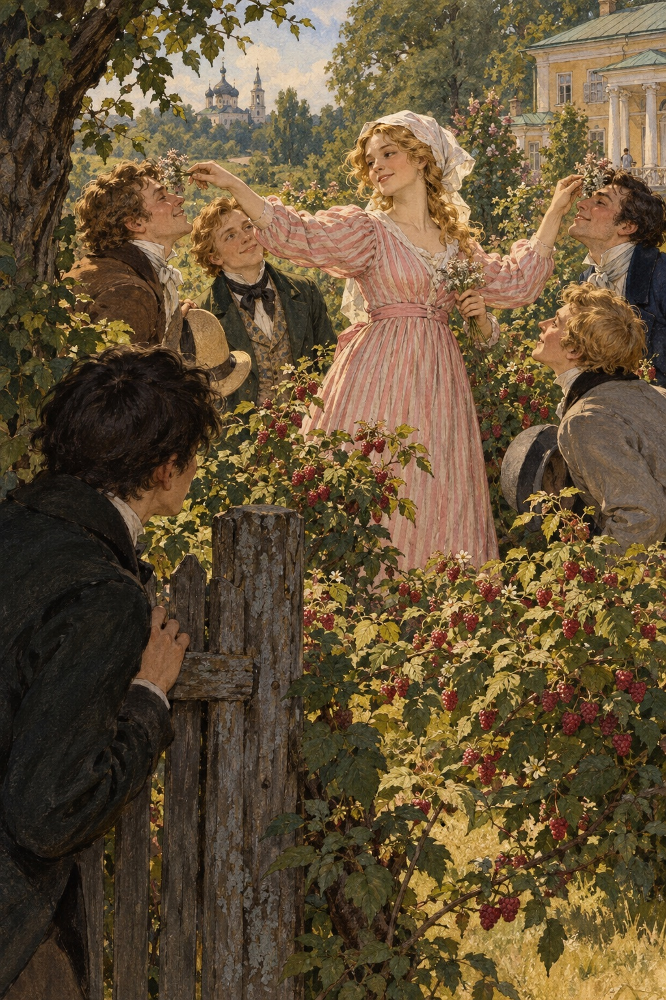

Ivan Turgenev · First Love
제2장
나는 저녁마다
총을 들고 정원을 돌아다니며
까마귀를 노리곤 했다.
그 조심스럽고
사납고 교활한 새들을
나는 오래전부터
싫어했다.
그날도
나는 정원으로 나갔다.
오솔길을 빠짐없이 돌아보았지만
헛수고였다.
까마귀들은
나를 알아보고
멀리서 짧게 울기만 했다.
그러다 우연히
낮은 울타리 앞으로 갔다.
그 울타리는
우리 집 정원과
오른쪽 별채 뒤에 딸린
좁다란 정원을
갈라놓고 있었다.
나는
고개를 숙인 채 걸었다.
갑자기
사람들 목소리가 들렸다.
울타리 너머를 바라본 나는
그대로 굳어 버렸다.
눈앞에
뜻밖의 광경이 펼쳐졌다.
몇 걸음 떨어진 풀밭에
키가 크고 날씬한 아가씨가
서 있었다.
푸른 산딸기 덤불 사이였다.
아가씨는
분홍 줄무늬 드레스를 입고
머리에 하얀 수건을 둘렀다.
젊은 남자 넷이
그녀를 둘러싸고 있었다.

아가씨는
남자들의 이마를
차례로 톡톡 쳤다.
손에 든 것은
작고 잿빛인 꽃이었다.
이름은 모르지만
아이들에게는 익숙한 꽃이다.
작은 주머니처럼 생겨서
단단한 데에 부딪치면
톡 소리를 내며 터진다.
남자들은
서로 먼저 맞고 싶다는 듯
이마를 내밀었다.
옆에서 바라본 그녀의 몸짓에는
사람을 홀리는 무언가가 있었다.
당당하면서도 다정하고,
짓궂으면서도 사랑스러웠다.
나는
놀랍고 좋아서
하마터면 소리를 지를 뻔했다.
저 고운 손가락이
내 이마도 한 번 쳐 준다면,
그 자리에서
세상 무엇이든
내줄 수 있을 것 같았다.
총이
손에서 미끄러져
풀밭에 떨어졌다.
나는
모든 것을 잊고
그녀를 뚫어지게 바라보았다.
날씬한 몸매와 목,
아름다운 두 팔,
흰 수건 아래로
조금 헝클어진 금발,
반쯤 감긴 영리한 눈과
긴 속눈썹,
그 아래의 부드러운 뺨까지.
“이봐요, 젊은 양반.”
갑자기 곁에서
누군가 말을 걸었다.
“남의 집 아가씨를
그렇게 훔쳐봐도 됩니까?”
나는
온몸이 움찔했다.
정신이 아득해졌다.
울타리 너머,
내 바로 곁에
어떤 남자가 서 있었다.
짧게 깎은 검은 머리에
비웃는 듯한 눈길이었다.
바로 그때
아가씨도 나를 돌아보았다.
표정이 쉴 새 없이 바뀌는 얼굴에
커다란 회색 눈이 보였다.
그 얼굴이
갑자기 웃음으로 흔들렸다.
하얀 이가 반짝였고,
두 눈썹이 익살스럽게 치켜올라갔다.
나는
얼굴이 화끈 달아올랐다.
땅에 떨어진 총을 집어 들고
내 방으로 달아났다.
등 뒤에서
맑고 큰 웃음소리가 따라왔다.
하지만
악의가 담긴 웃음은 아니었다.
나는
침대에 몸을 던지고
두 손으로 얼굴을 가렸다.
가슴이
펄쩍펄쩍 뛰었다.
몹시 부끄러우면서도
기분이 좋았다.
처음 겪는 설렘이었다.
조금 진정한 뒤
머리를 빗고
옷매무새를 가다듬었다.
그리고
차를 마시러 아래층으로 내려갔다.
그 아가씨의 모습이
눈앞에서 떠나지 않았다.
가슴은
더는 뛰지 않았지만
기분 좋게 조여 왔다.
“무슨 일 있니?”
아버지가 느닷없이 물었다.
“까마귀라도 잡았어?”
나는
모든 일을 말씀드릴까 하다가
그만두었다.
그저 혼자
슬며시 웃었다.
잠자리에 들 때는
나도 왜 그랬는지 모르겠다.
한쪽 발로
세 바퀴쯤 빙글 돌고,
머리에 기름을 바른 다음
누웠다.
그리고 밤새
죽은 듯이 잤다.
새벽 무렵
잠깐 눈을 떴다.
고개를 들고
주위를 황홀하게 둘러본 뒤
다시 잠들었다.